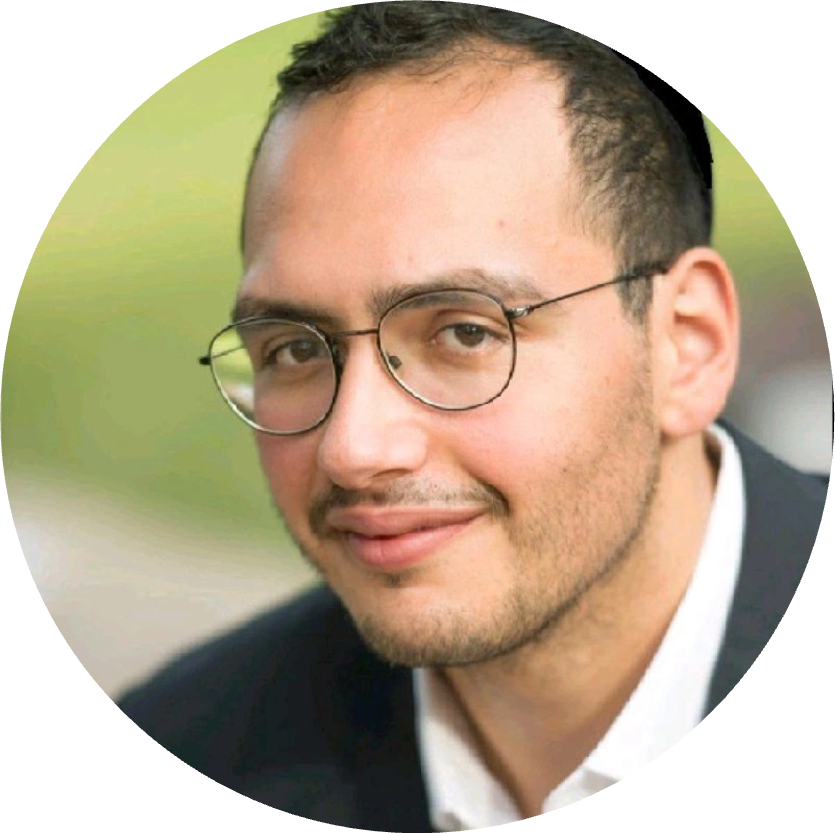

I'm a neuroscience researcher and a medical student. My interests range from molecular biology to clinical neurophysiology, with a particular emphasis on quantitative methods, and integrating artificial intelligence in future clinical practice. You can find here information on my current state of research, scientific thoughts, as well as contact information.
Thank you!
Professional summary
After the first cycle of medical studies, I integrated the selective MD-PhD program of the Ecole Normale Superieure to study neurosciences and bioinformatics. For my PhD, I joined Alain Prochiantz's lab to work on the molecular mechanisms involved in brain meta-plasticity. The initial intuition I had was that modulating adult plasticity could allow the brain to re-wire in later life stages, providing therapeutic opportunities. Therefore, my work was focused on critical periods in post-natal development and on molecular methods to enhance adult brain plasticity.
We first provided evidence that PV cells, which are responsible for critical periods development in the brain, lack specific transcriptomics pathways in different types of enhanced plasticity paradigms, which suggest that multiple genetic pathways can lead to the same functional plasticity. We then developed two models of neurological disorders, one of Parkinson's disease and one of psychiatric disorders, and studied the effect of adult brain plasticity modulation as a potential therapeutic strategy, with promising results. I developed new techniques in the lab, including CUT&RUN, ATAC-Seq, TRAP, image analysis, and their respective data analysis pipelines. I also implemented new behavioral tests and associated video analysis using automated tracking and machine learning that are still used by the lab's students. I pursued this work with a short post-doc in bio-informatics on astrocytes transcriptomic data in collaboration with Nathalie Rouach.
I then joined the lab of Emmanuel Mignot in Stanford to work in machine learning for medical data. The aim of that project is to investigate circadian rythms using blood proteins. My individual contribution is on the extrapolation of organ-related circadian signal, based solely on blood markers. I am currently pursuing this project while finishing my medical degree.
My long-term goal is to work at the interface of medicine, neurosciences, and artificial intelligence. My latest personnal project is to include principles of brain metaplasticity and connectomics in AI algorithms.